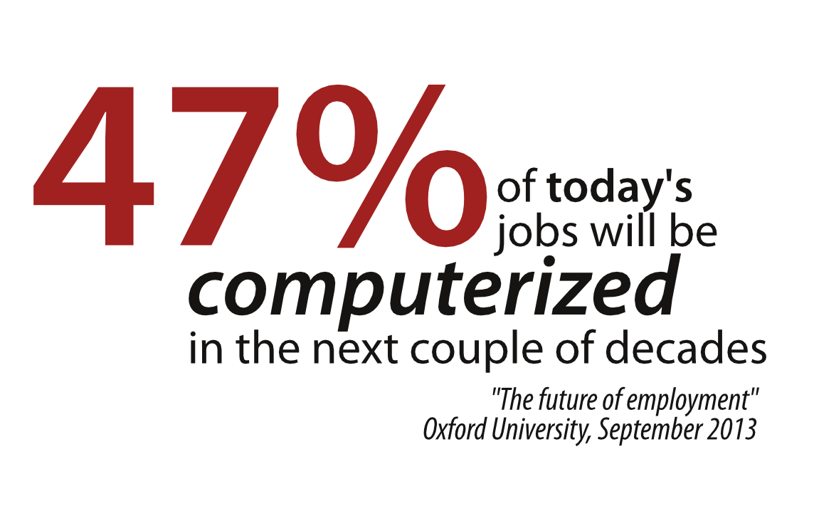
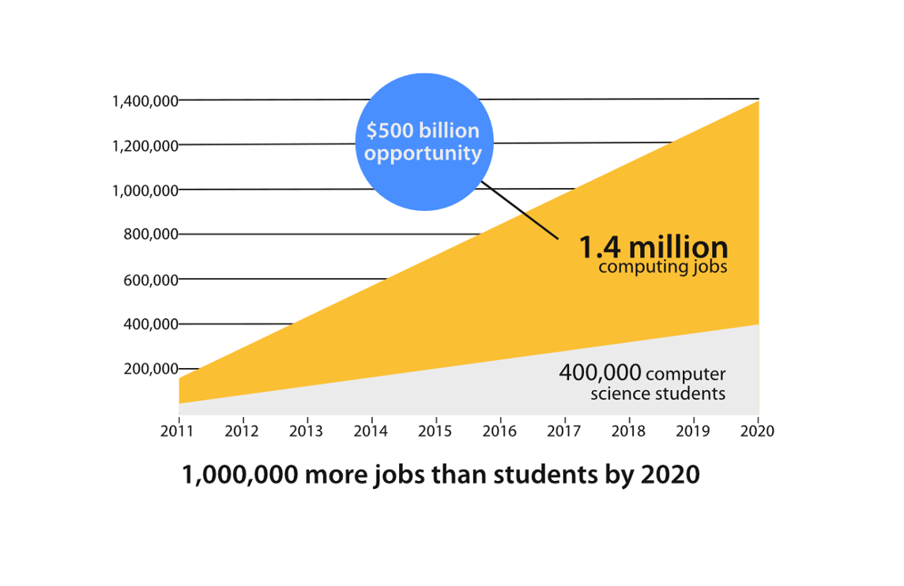

The Opportunity




A recent study by Oxford University found that 47% of all U.S. jobs will be automated in the next 10 to 20 years.
Of all the Science, Technology, Engineering, and Math jobs that will be created in Utah in the next decade, 70% of them are in computer science.
According to Code.org, there will be a shortfall of over one million computer science jobs by 2020.
The Wasatch Front is the 5th best city in the US to land a technology job.